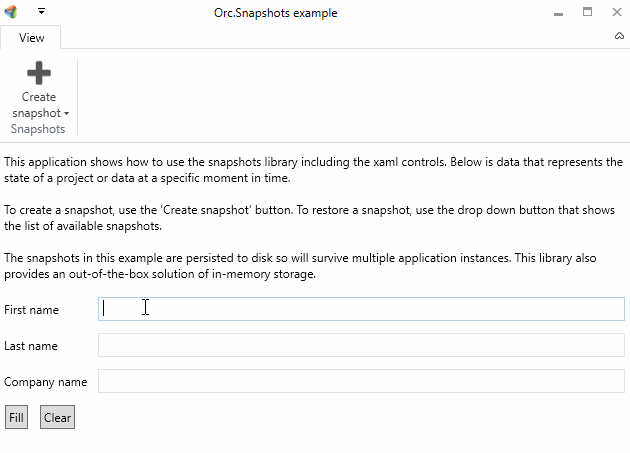

Find the source at https://github.com/WildGums/Orc.Snapshots.
| Chat |  |
| Downloads |  |
| Stable version |  |
| Unstable version |  |
Manage snapshots the easy way using this library.

Quick introduction
Snapshots are like save games. They represent a set of data and/or values from a specific moment in time in an application. Using snapshots allows an application (and thus eventually the end-user) to store data (in memory, in a file or any in other persistence tech) which can later be retrieved.
The advantage of using this library is that it will zip all the data into a single snapshot package. The example below has 3 different providers (they are just examples, it doesn't have to make sense what they are doing):
- ProjectSnapshotProvider => stores the data in a project to a snapshot
- DateTimeSnapshotProvider => stores the current date/time to a snapshot
- UsernameSnapshotProvider => stores the current username to a snapshot
Whenever a snapshot is created, the SnapshotManager will:
- Create a zip memory stream
- For each provider, it will ask the provider to fill up a memory stream which is stored as a separate file
- Persist the snapshot memory stream to the required persistence store
This will result in the following zip archive:
- Snapshot.zip
- ProjectSnapshotProvider.zip => contains the zipped memory stream of the snapshot provider
- DateTimeSnapshotProvider.zip => contains the zipped date/time
- UsernameSnapshotProvider.zip => contains the zipped username
If the data inside the snapshots needs to be encrypted, it can easily be achieved by implementing a custom ISnapshotStorageService and encrypt the data stream before writing to disk.
Below is an overview of the most important components:
ISnapshot=> the actual snapshot objectISnapshotManager=> the snapshot manager with events and management methodsISnapshotProvider=> custom providers that will provide / restore snapshots
Working with snapshot always requires multiple method calls:
- Create a snapshot
- Add the snapshot to the manager
- Save the snapshots
Separate methods were introduced to allow full customized usage of the interaction with the snapshots. There are convenient extension methods that merge multiple method calls into a single call.
Warning
Important note
The base directory will be used as repository. This means that it cannot contain other files and all other files will be deleted from the directory
Initializing the snapshot manager
Because the snapshot manager is using async, the initialization is a separate method. This gives the developer the option to load the snapshots whenever it is required. To load the stored snapshots from disk, use the code below:
await snapshotManager.LoadAsync();
Retrieving a list of all snapshots
var snapshots = snapshotManager.Snapshots;
Creating a snapshot
Storing information in a snapshot is the responsibility of every single component in the application. The ISnapshotManager will gather all the information for the snapshot providers.
Call the following method to create a snapshot.
await snapshotManager.CreateSnapshotAsync("My snapshot title");
Note that a snapshot is only created, not registered in the manager or saved to disk by this method
Providers
Create a provider as shown in the example below:
public class MySnapshotProvider : SnapshotProviderBase
{
private readonly IMyService _myService;
public MySnapshotProvider(IMyService myService)
{
_myService = myService;
Name = "MyProvider";
}
public override async Task ProvideAsync(ISnapshot snapshot)
{
var data = _myService.GetCurrentState();
await snapshot.SetDataAsync(Name, data);
}
public override async Task RestoreAsync(ISnapshot snapshot)
{
var data = await snapshot.GetDataAsync<MyState>(Name);
if (data is not null)
{
_myService.RestoreState(data);
}
}
}
Register the provider in the manager for it to take effect:
snapshotManager.AddProvider(myProvider);
Registering a snapshot and saving all snapshots to disk
To register a snapshot with the manager, use the code below:
await snapshotManager.AddAsync(snapshot);
To save all snapshots, use the code below:
snapshotManager.SaveAsync();